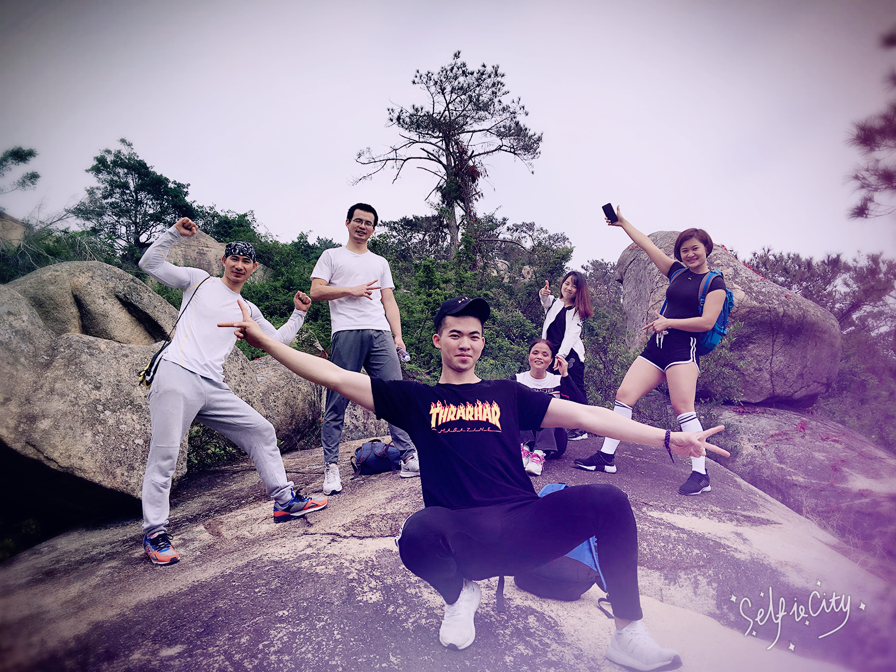
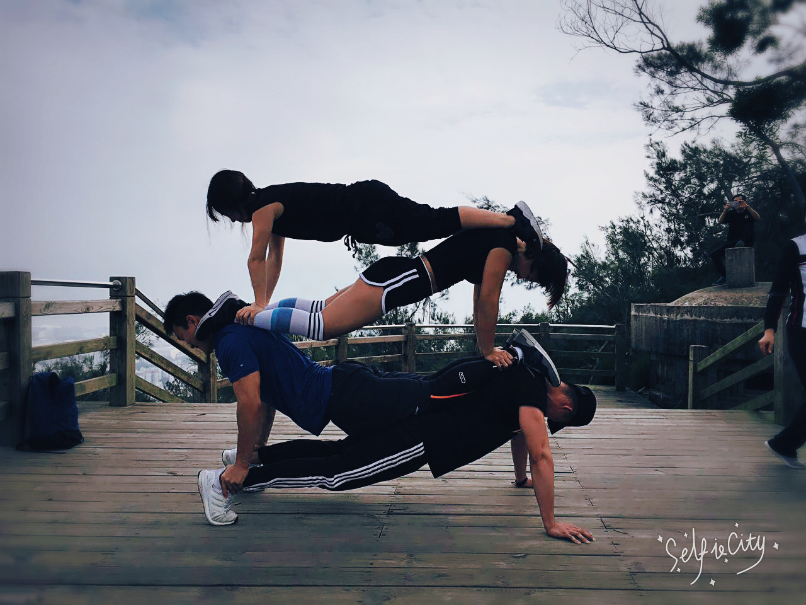
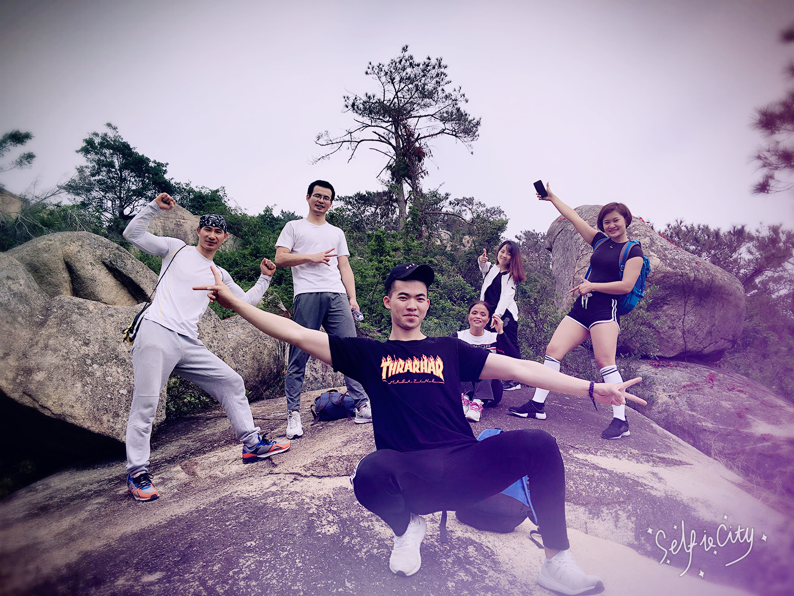
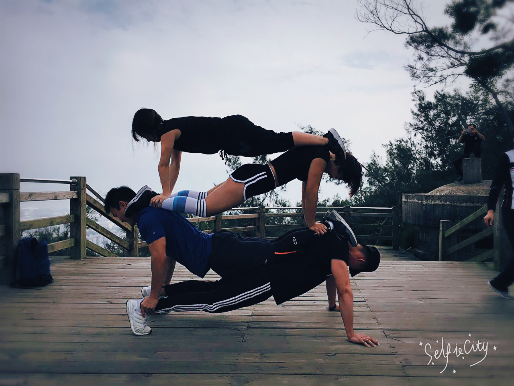
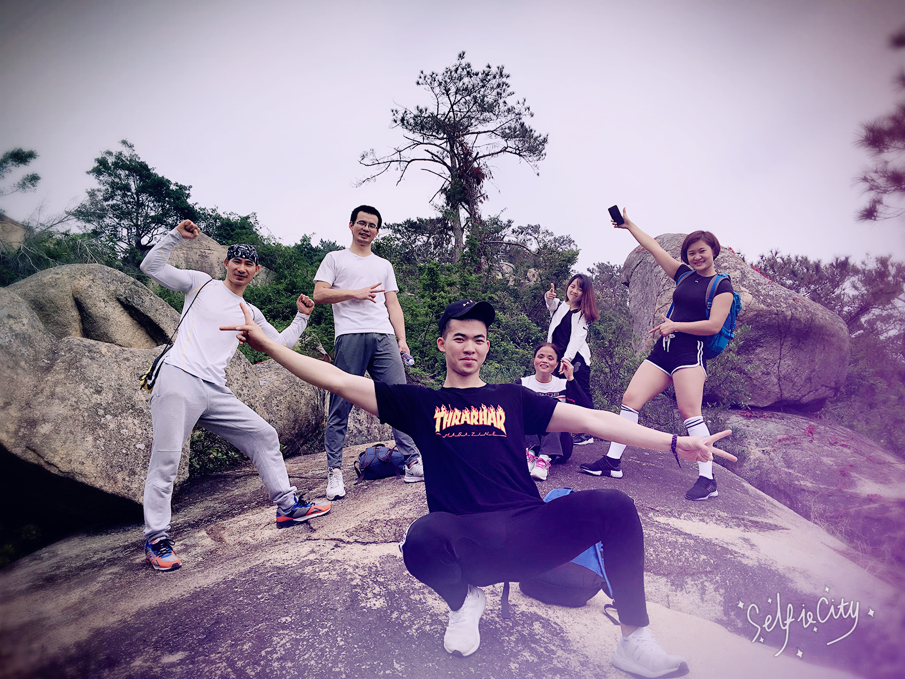
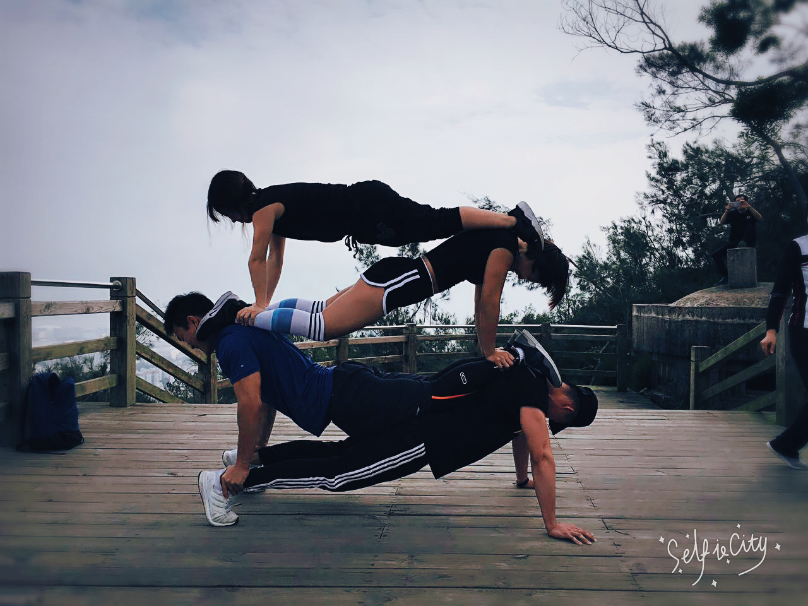

陈跃利
求职：Web前端工程师
给我一个机会，我会证明给你看
GIVE ME A CHANCE, I'LL PROVE IT TO YOU
个人资料
个人展示
Personal Presitation
 





我期待一个自我展示的舞台
陈跃利
18860028875 896671603@qq.com
求职：Web前端工程师
给我一个机会，我会证明给你看
GIVE ME A CHANCE, I'LL PROVE IT TO YOU


陈跃利
18860028875 896671603@qq.com